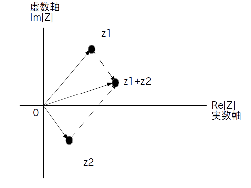
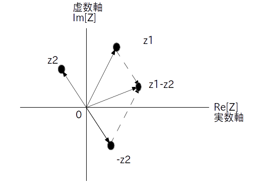

ここでは複素数の四則演算について説明します。
複素数の足し算は直交形式で考えると楽です。
直交形式を使って実数、虚数成分別に足し合わせる
\begin{align*} z_1 &= a + b \cdot j \\ z_2 &= c + d \cdot j \\ z_3 &= z_1 + z_2 \end{align*}とした時
\[ z_3 = (a + c) + (b + d) \cdot j \]図で表すと、複素数どうしの足し算は複素平面上でのベクトルの足し算になります(図1)。

引き算も直交形式で考えると楽です。
直交形式を使って実数、虚数成分別に引く
\begin{align*} z_1 &= a + b \cdot j \\ z_2 &= c + d \cdot j \\ z_3 &= z_1 - z_2 \end{align*}とした時
\[ z_3 = (a - c) + (b - d) \cdot j \]
ベクトル的には $z_1$ から $z_2$ を引くという行為は、$z_1$ に $z_2$ を 180 度回転させた $-z_2$ を足すことを意味します。
図2が引き算 $z_1 - z_2$ をベクトルで表した図になります。

掛け算は極形式で考えたほうが楽です。
極形式を使ってネイピア数 e の掛け算をおこなう
絶対値同士は掛ける、偏角同士は足すという演算手順になる
の時
\begin{align*} |z_3| &= |z_1|\cdot|z_2| \\ \angle z_3 & = \angle \ z_1 + \angle \ z_2 \end{align*}なので
\[ z_3 = ( |z_1|\cdot|z_2| ) \cdot \textrm{e}^{\{j\cdot (\angle \ z_1 + \angle \ z_2)\}} \]ところで $z_1$ がただの実数 $a$ であるときは $a$ の符号に気を付けて下さい。
もし $a \geq 0$ ならそのまま $z_1 = a$ として
\[ z_3 = (a \cdot |z_2|) \cdot \textrm{e}^{\{j\cdot \angle \ z_2\}} \]で結構です。
一方、$a < 0$ なら $-1 = \textrm{e}^{j\pi}$ なので
\[ z_1 = |a| \cdot \textrm{e}^{j\pi} \]という風に $z_1$ を変形してから
\[ z_3 = ( |a| \cdot |z| )\cdot \textrm{e}^{\{j\cdot (\angle \ z + \pi)\}} \]と計算します。
割り算も極形式で考えると楽です。
極形式を使ってネイピア数 e の割り算をおこなう
絶対値同士は割る、偏角同士は引くという演算手順になる
の時
\[ \frac{1}{z_2} = \frac{1}{|z_2|} \cdot \textrm{e}^{\{-j\cdot \angle \ z_2\}} \]なので
\[ z_3 = \frac{|z_1|}{|z_2|} \cdot \textrm{e}^{\{j\cdot (\angle \ z_1 - \angle \ z_2)\}} \]